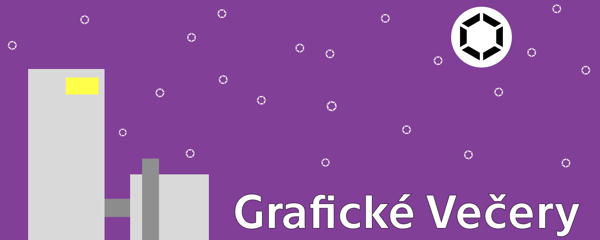

GRAFIT · FIT ČVUT
GRAFIT · FIT ČVUT
Laboratoře
SAGELab a ggLab
Prohlídka laboratoří, ukázky projektů a představení výzkumu, výuky i studentské tvorby.
Studenti z dalekého Japonska si prohlédli SAGELab a ggLab, podívali se, čemu se na FITu věnujeme, a vyzkoušeli si dotykovou stěnu i studentské hry.
Návštěva propojila mezinárodní studentskou výměnu s ukázkou našich laboratoří, projektů a interaktivních instalací. V SAGELabu a ggLabu si hosté prošli zázemí, dozvěděli se, co na FITu děláme, a vše si mohli vyzkoušet prakticky.
Z her a instalací je nejvíce bavil Útěk z Brna — hra, která zaujala i návštěvníky z tak dalekého Japonska.

Prohlídka laboratoří, ukázky projektů a představení výzkumu, výuky i studentské tvorby.
Hosté si vyzkoušeli dotykovou stěnu a další interaktivní ukázky.

Dokumentární biografická hra o Pražákovi, který se snaží uniknout kruté realitě Brna.
Fotografie z návštěvy doplníme později.